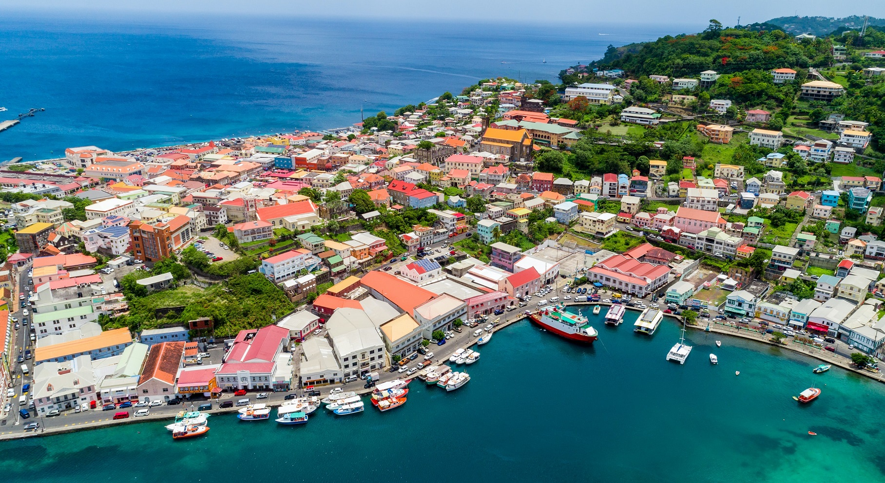
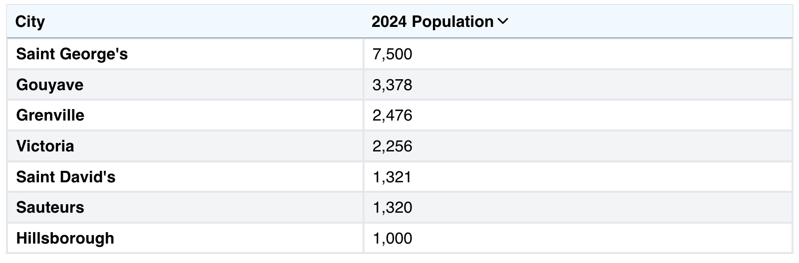

St. Georges
Population: 7,500 (town)
Main Language: English
Landmarks: Fort George, Fort Frederick


St Georges seems to follow the Latin American city model the best because there seems to be a spine going through it, even though there isn't really an industial section
St. Georges doesn't really follow any of these classifications since it is not big enough to be a mega or meta city, it doesn't really have an influence anywhere else in the world, the populaiton isn't rapidly growing, and it isn't on the edge of a larger city

Grenada mostly follows the rank-size rule, with the populations of its cities and towns being close to what they should be according to the rule